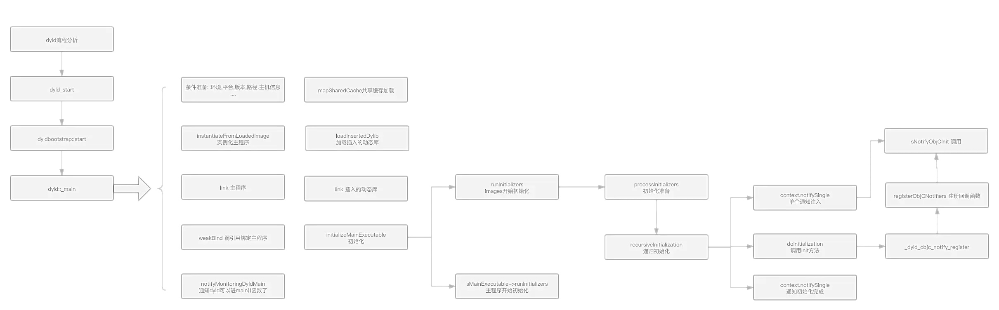
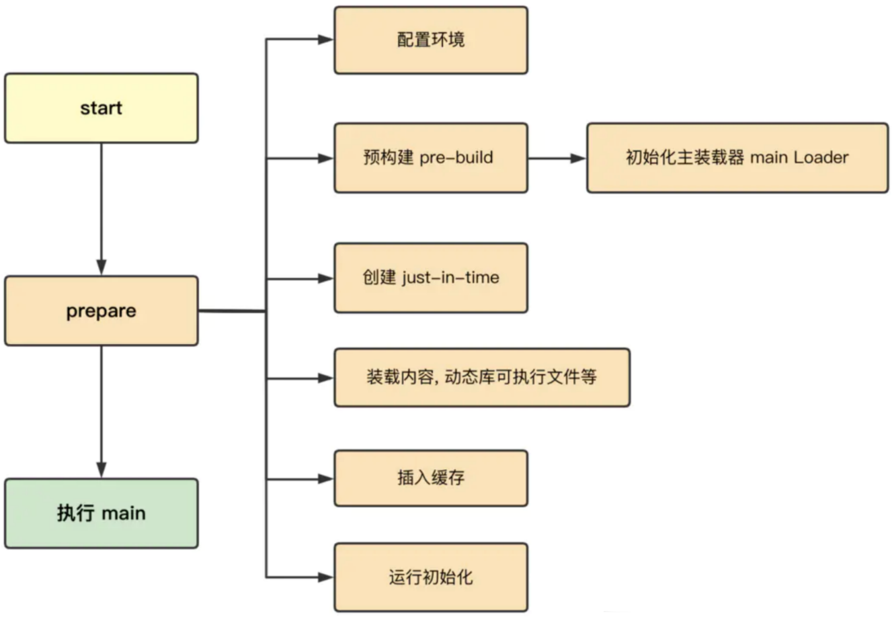
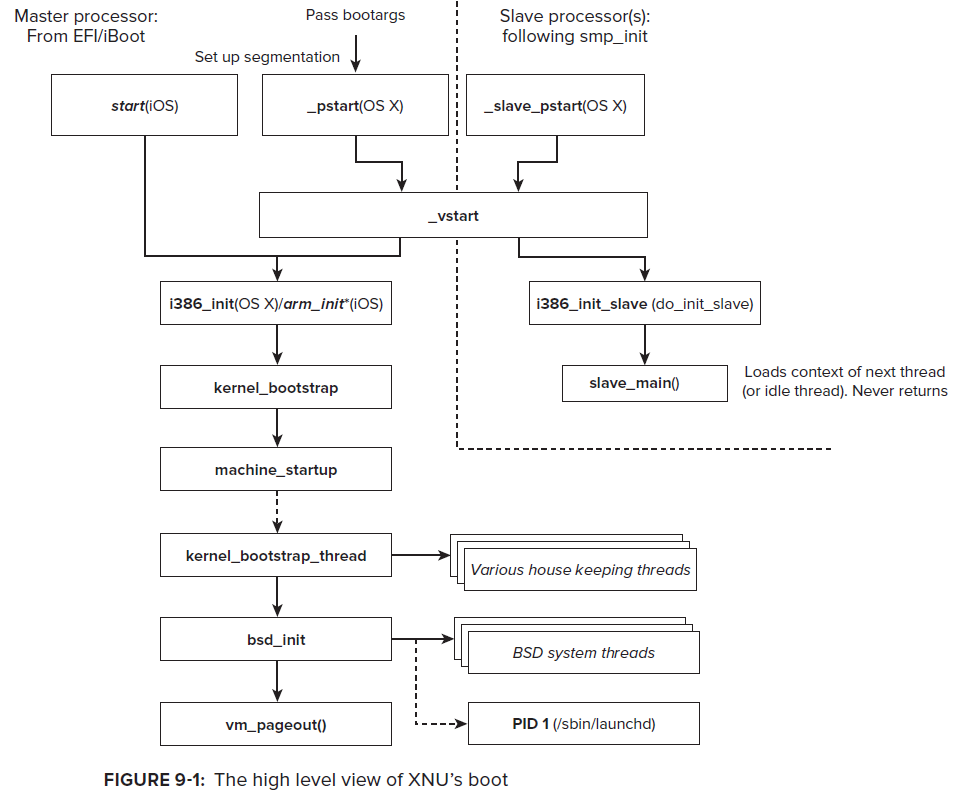

dyld加载过程
iOS的app启动过程
- iOS的app启动过程
- 概述
- 详细
- 概述
- iOS的app启动的不同阶段
Pre-main阶段- 图
- 文字版
- 加载可执行文件（读取Mach-O）
- 加载动态库（Dylib）
- Rebase & Bind
- Objc
- Initializers
- 图
main阶段
- iOS的app启动调用函数


dyld加载过程
- dyld加载过程
- 图
- 文字版
- 图
- 图
- 文字版：9步
- 第一步：设置运行环境
- 第二步：加载共享缓存
- 第三步：实例化主程序
- 第四步：加载插入的动态库
- 第五步：链接主程序
- 第六步：链接插入的动态库
- 第七步：执行弱符号绑定
- 第八步：执行初始化方法
- 第九步：查找入口点并返回
- dyld(加载Mach-O)涉及到
- 校验代码签名codesign
- segment
- load commands
- 映射地址空间address space
- 即：多个段segment
- 设置load commands是可执行executable
- 校验代码签名codesign
- dyld3
- 
- dyld4
- 
- 图


dyld加载过程1
(lldb) bt
* thread #1, queue = 'com.apple.main-thread', stop reason = breakpoint 23.2
* frame #0: 0x000000018d124174 libdyld.dylib`dladdr
frame #1: 0x000000010b0bfbac AwemeCore`___lldb_unnamed_symbol13025$$AwemeCore + 80
frame #2: 0x000000018d041c38 libobjc.A.dylib`CALLING_SOME_+initialize_METHOD + 20
frame #3: 0x000000018d04742c libobjc.A.dylib`initializeNonMetaClass + 644
frame #4: 0x000000018d0471f8 libobjc.A.dylib`initializeNonMetaClass + 80
frame #5: 0x000000018d047ba8 libobjc.A.dylib`initializeAndMaybeRelock(objc_class*, objc_object*, mutex_tt<false>&, bool) + 284
frame #6: 0x000000018d05450c libobjc.A.dylib`lookUpImpOrForward + 700
frame #7: 0x000000018d0448a8 libobjc.A.dylib`object_setClass + 104
frame #8: 0x000000018d29da70 CoreFoundation`_CFRuntimeCreateInstance + 580
frame #9: 0x000000018d2bcb74 CoreFoundation`__CFStringCreateImmutableFunnel3 + 1944
frame #10: 0x000000018d2bcef8 CoreFoundation`CFStringCreateWithCString + 92
frame #11: 0x000000018d29f610 CoreFoundation`__CFInitialize + 812
frame #12: 0x0000000104fddfac dyld`ImageLoaderMachO::doImageInit(ImageLoader::LinkContext const&) + 248
frame #13: 0x0000000104fde580 dyld`ImageLoaderMachO::doInitialization(ImageLoader::LinkContext const&) + 40
frame #14: 0x0000000104fd95d0 dyld`ImageLoader::recursiveInitialization(ImageLoader::LinkContext const&, unsigned int, char const*, ImageLoader::InitializerTimingList&, ImageLoader::UninitedUpwards&) + 548
frame #15: 0x0000000104fd953c dyld`ImageLoader::recursiveInitialization(ImageLoader::LinkContext const&, unsigned int, char const*, ImageLoader::InitializerTimingList&, ImageLoader::UninitedUpwards&) + 400
frame #16: 0x0000000104fd8334 dyld`ImageLoader::processInitializers(ImageLoader::LinkContext const&, unsigned int, ImageLoader::InitializerTimingList&, ImageLoader::UninitedUpwards&) + 184
frame #17: 0x0000000104fd83fc dyld`ImageLoader::runInitializers(ImageLoader::LinkContext const&, ImageLoader::InitializerTimingList&) + 92
frame #18: 0x0000000104fca3d0 dyld`dyld::initializeMainExecutable() + 136
frame #19: 0x0000000104fcedb4 dyld`dyld::_main(macho_header const*, unsigned long, int, char const**, char const**, char const**, unsigned long*) + 4616
frame #20: 0x0000000104fc9208 dyld`dyldbootstrap::start(dyld3::MachOLoaded const*, int, char const**, dyld3::MachOLoaded const*, unsigned long*) + 396
frame #21: 0x0000000104fc9038 dyld`_dyld_start + 56
==
- dyld`_dyld_start
- dyld`dyldbootstrap::start
- dyld`dyld::_main
- dyld`dyld::initializeMainExecutable
- dyld`ImageLoader::runInitializers
- dyld`ImageLoader::processInitializers
- dyld`ImageLoader::recursiveInitialization
- dyld`ImageLoaderMachO::doInitialization
- dyld`ImageLoaderMachO::doImageInit
- ...
- libdyld.dylib`dladdr
- ...
- dyld`ImageLoaderMachO::doImageInit
- dyld`ImageLoaderMachO::doInitialization
- dyld`ImageLoader::recursiveInitialization
- dyld`ImageLoader::processInitializers
- dyld`ImageLoader::runInitializers
- dyld`dyld::initializeMainExecutable
- dyld`dyld::_main
- dyld`dyldbootstrap::start
dyld加载过程2
- _dyld_start
- dyldbootstrap: : start
- dyld: : _main
- dyld: : initializeMainExecutable
- ImageLoader::runInitializers
- ImageLoader::processInitializers
- ImageLoader::recursiveInitialization
- Dyld ::notifySingle
- libobjC.a. dylib load_images
- +[ViewController load]
- libobjC.a. dylib load_images
- Dyld ::notifySingle
- ImageLoader::recursiveInitialization
- ImageLoader::processInitializers
- ImageLoader::runInitializers
- dyld: : initializeMainExecutable
- dyld: : _main
- dyldbootstrap: : start
dyld加载过程3
(lldb) bt
* thread #1, queue = 'com.apple.main-thread', stop reason = breakpoint 6.1
* frame #0: 0x0000000102495310 libAwemeDylib.dylib`_logos_method$_ungrouped$NSString$stringByAppendingString$(self="https://", _cmd="stringByAppendingString:", aString=0x0000000000000000) at AwemeDylib.xm:175:29
frame #1: 0x0000000108532cf8 AwemeCore`___lldb_unnamed_symbol3548$$AwemeCore + 520
...
frame #38: 0x00000001c2ecf60c FrontBoardServices`-[FBSSerialQueue _performNextFromRunLoopSource] + 28
frame #39: 0x00000001bdcd0a00 CoreFoundation`__CFRUNLOOP_IS_CALLING_OUT_TO_A_SOURCE0_PERFORM_FUNCTION__ + 24
frame #40: 0x00000001bdcd0958 CoreFoundation`__CFRunLoopDoSource0 + 80
frame #41: 0x00000001bdcd00f0 CoreFoundation`__CFRunLoopDoSources0 + 180
frame #42: 0x00000001bdccb23c CoreFoundation`__CFRunLoopRun + 1080
frame #43: 0x00000001bdccaadc CoreFoundation`CFRunLoopRunSpecific + 464
frame #44: 0x00000001c7c6b328 GraphicsServices`GSEventRunModal + 104
frame #45: 0x00000001c1dd863c UIKitCore`UIApplicationMain + 1936
frame #46: 0x000000010efec094 AwemeCore`awemeMain + 200
frame #47: 0x0000000102267ca4 Aweme`___lldb_unnamed_symbol21$$Aweme + 12
frame #48: 0x00000001bdb54360 libdyld.dylib`start + 4
- libdyld.dylib`start 开始的调用顺序
- app相关逻辑：Aweme
___lldb_unnamed_symbol21$$Aweme、AwemeCoreawemeMain- 然后才是其他系统常见函数
- UIKitCore`UIApplicationMain
- ...
- UIKitCore`UIApplicationMain
- 然后才是其他系统常见函数
- app相关逻辑：Aweme
相关
launchd
launchd是第一个被内核启动的用户态进程，负责直接或间接的启动系统中的其他进程。它是用户模式里所有进程的父进程，同时也将负责两种后台作业：守护程序和代理程序。
- 守护程序：后台服务，通常和用户没有交互。比如push通知、外接设备插入的处理和XPC等。
- 代理程序：可以和用户交互，比如Mac的Finder或iOS的SpringBoard就是其中之一，即广义上我们理解的桌面。
launchd是如何被创建的，得先看下下面这张：
- XNU启动流程图
- 图
- 
- 文字
start(iOS)：初始化MSR、物理页映射、安装中断处理函数arm_init(iOS)：初始化平台，为启动内核做准备machine_startup：解析命令行参数和调试参数kernel_bootstrap：安装和初始化mach内核的子系统，包括：进程间通信、时钟、访问策略、进程和线程调度kernel_bootstrap_thread：创建idle线程，初始化iokit设备驱动框架，初始化应用程序和dyld运行所需的共享模块。如果内核开启了mac(强制访问控制)策略，则会进行mac的初始化，以确系统的安全bsd_init：内核部分剩余的事情都由其来做，初始化各个子系统。网络、文件系统、管道、内存cache、线程、进程、同步对象、权限策略等等。 一切完成后，会执行/sbin/launchd来创建一个launchd
- 图